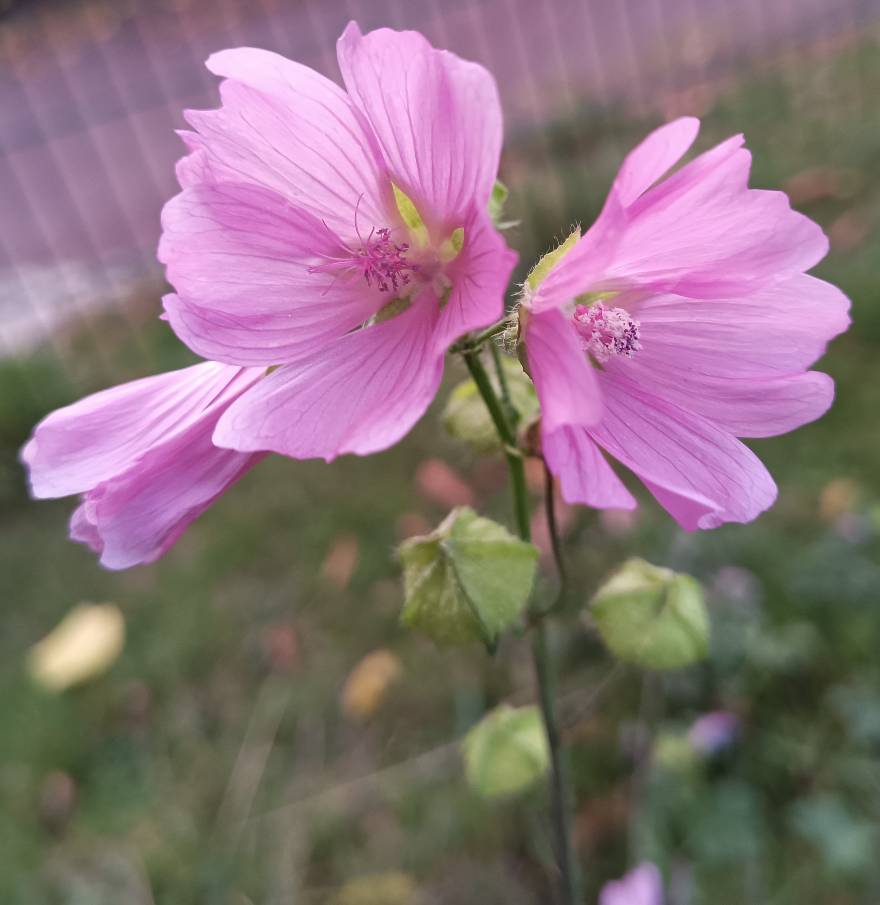
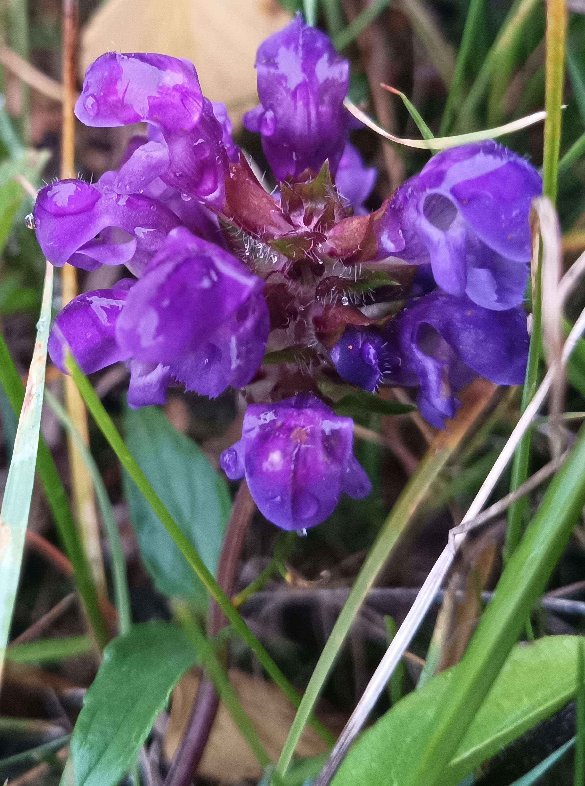
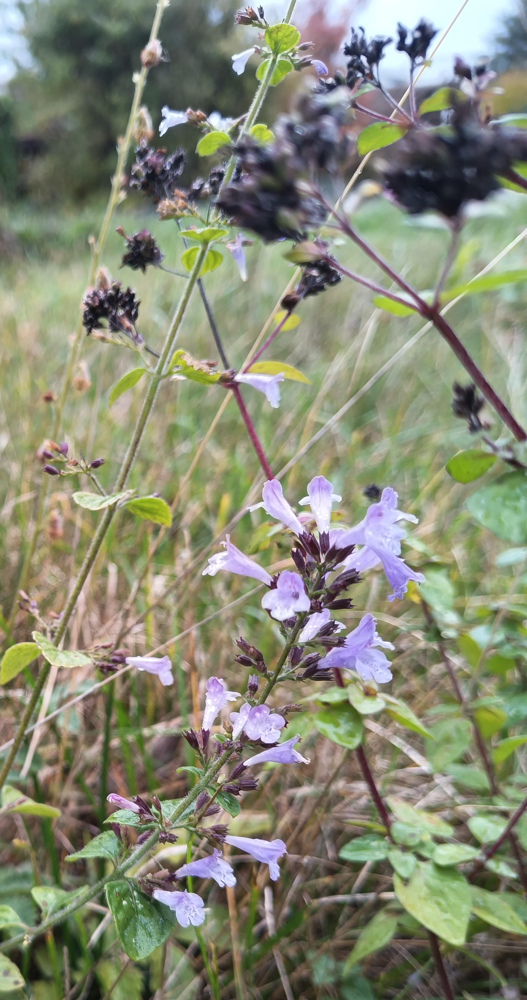
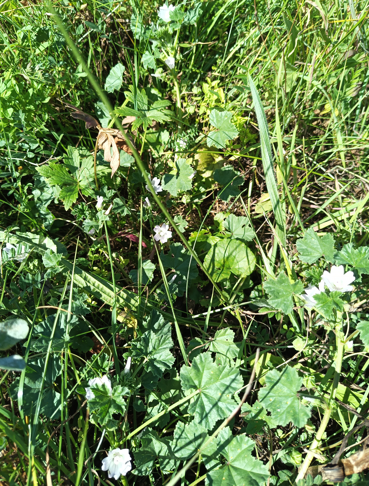
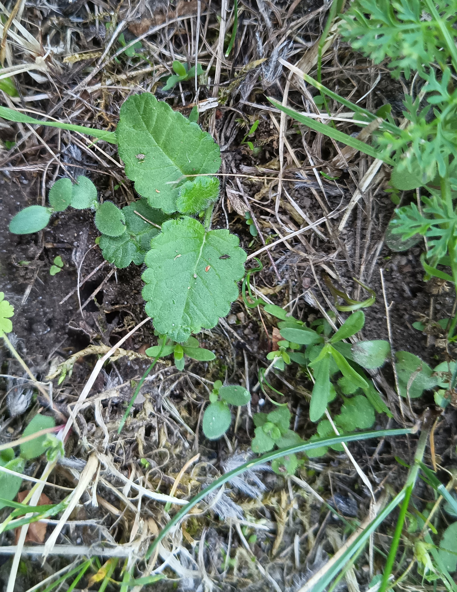
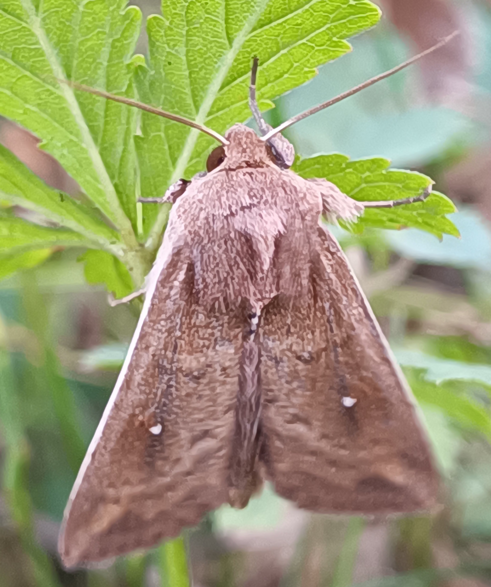
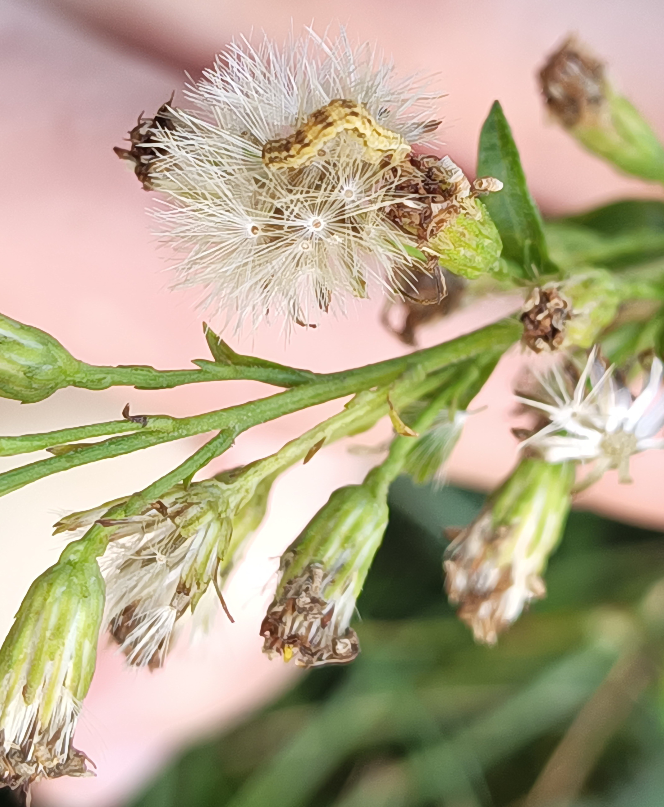
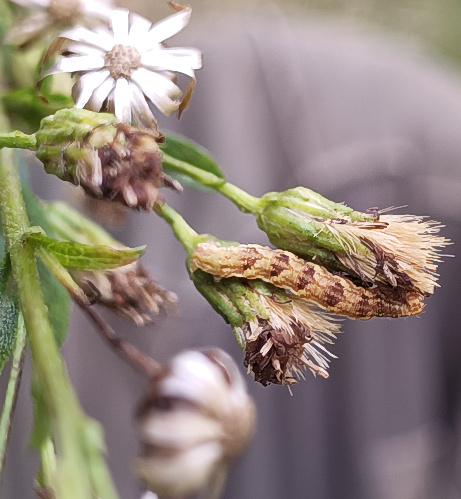
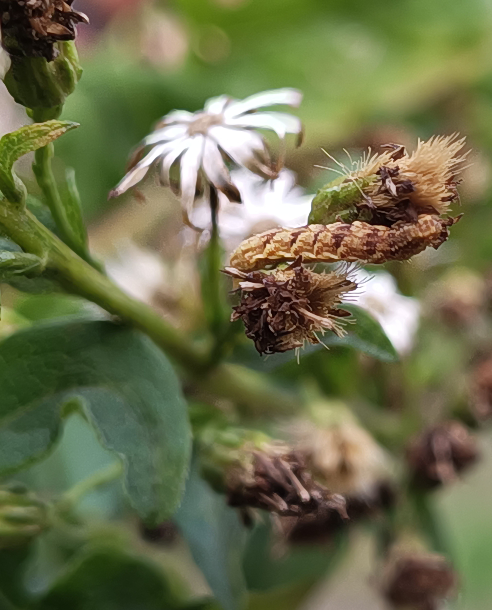

Gepflegte
Wildnis
Gepflegte
Wildnis
Fotoarchiv − Oktober & September 2025
Eine Furchenbiene auf einer Acker-Kratzdistel-Blüte
Ende September

Moschus-Malve am 24.10.

Großblütige Braunelle Anfang Oktober

Kleinblütige Bergminze Mitte Oktober
(auch Oregano und Odermennig)

Weg-Malve Mitte September

Frisch gekeimtes: eventuell Betonie und Heide-Nelke

Weißpunkt-Graseule



(Spanner?-)Raupen, die die Samenstände von Solidago virgaurea fressen


Fläche 7 Anfang Oktober von der linken und rechten Süd-Ecke aus
Mosaik aus gerade erst und zuletzt Mitte August, im Juli, Juni oder noch früher gemähten Teilflächen

Biotopelemente-Sammlung im Süden
(links oben Fl 8, linke Mitte Hecke Fl 9, rechts Stein- & Sandhaufen Fl 14&15)
Besenginster (größte Pflanze), Hauhechel und Frühlings-Fingerkraut auf Sandhaufen